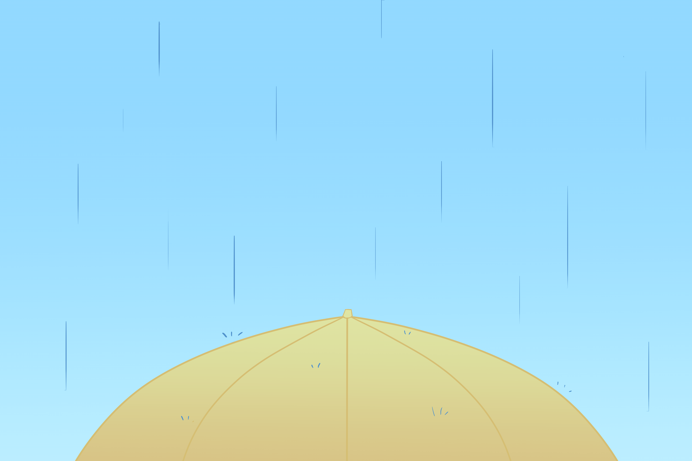

condensation
(kon-den-say-shon)
Condensation is how clouds are made.
As the evaporated water rises higher into the air, it gets colder and starts turning into water as tiny droplets or small ice crystals.
Dew, fog, and clouds are all types of condensation.
precipitation
(preh-si-pi-tay-shon)

Precipitation happens when the water droplets in clouds get bigger and heavier.
This makes them fall back down as rain, snow, or hail.
deposition
(deh-po-zi-shon)

Deposition is the opposite of sublimation.
Deposition is when water vapour gets immediately frozen, skipping the liquid stage.
Deposition can be found as snowflakes or frost.